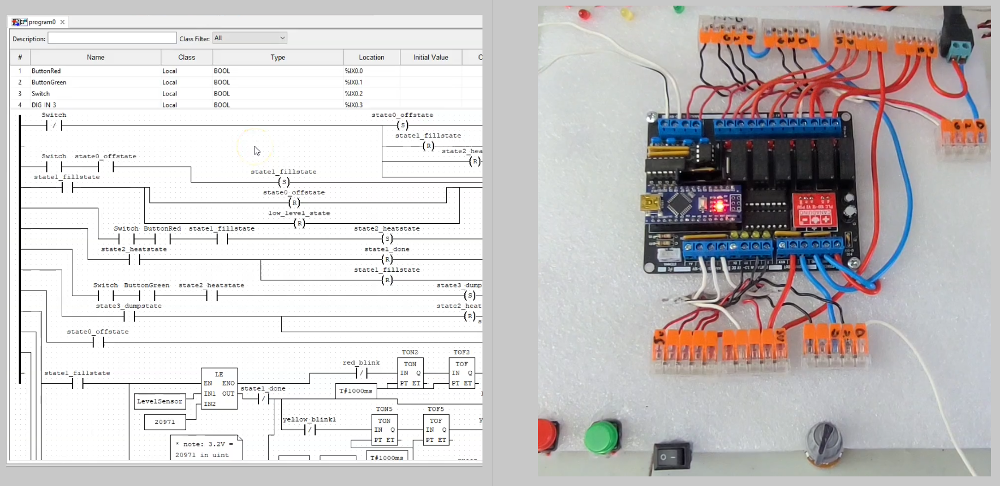
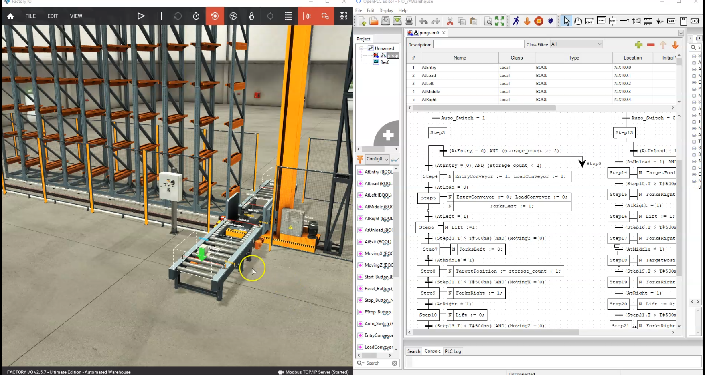
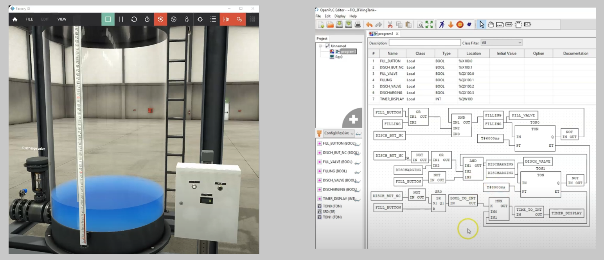
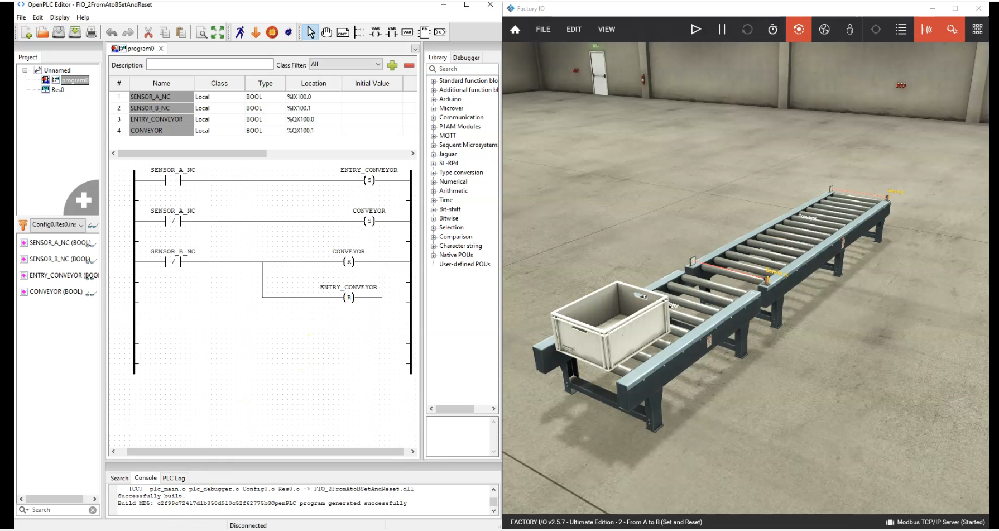

Automation
Let's see what I've experienced with automation (Industrial; Operational Technology; PLC;
SCADA). [Click on the titles to see each article.]
{To see all my project experiences, go to the 'Archived' page.}
(NOTE: These articles are personal records of what projects I have attempted. These are not
articles to take directions from; instead, I have left references to those articles at the
end.)
Why I Did This
While scouting online for cheap physical PLC options, I found the Canaduino PLC 100 on
Amazon.
It's a small board (about $30) that I had to solder myself and can
attach to an Arduino Nano. It contains ruggedized inputs and outputs at higher
voltages than what the Nano natively supplies, like
6 relay digital outputs with optoisolators; 4 digital inputs that can handle 3.3 - 24V; 4
analog inputs and 4 analog outputs that can both track in ranges between 0 - 10 V (very
similar to what many professional PLCs can do);
onboard LEDs for digital state notification; and 5V and 10V supply lines.
More importantly, it can be programmed with free Arduino IDE or the free OpenPLC editor and
runtime.
In this video I showcase the board demonstrating its power with a makeshift 'water heater
and humidifer plant'.

Why I Did This
In previous articles, I've mentioned training and experiencing PLC development using OpenPLC
and FactoryIO.
In this demo, I using SFC to program FactoryIO's warehouse scene.

Why I Did This
In previous articles, I've mentioned training and experiencing PLC development using OpenPLC
and FactoryIO.
In this demo, I using SFC to program FactoryIO's pick and place scene.

Why I Did This
In previous articles, I've mentioned training and experiencing PLC development using OpenPLC
and FactoryIO.
In this demo, I using FBD to program FactoryIO's filling tank scene.

Why I Did This
I'm trying to develop my PLC automation skills as a possible career path, and I'm currently
a
student with a student budget.
PLC programming software can be expensive, and I wanted to find a way to expand my learning
of PLC programming (and utilize test projects) without breaking the bank.
OpenPLC is an open-source PLC programming software that can run on a Raspberry Pi, Arduino,
or just your own PC, and FactoryIO is a virtual plant software that can simulate a plant
environment (which you can get a free trial for 30 days).
Together, they can be used to learn PLC programming and simulate a plant environment for
free (for 30 days, then about $20/month for FactoryIO).
This is my demo of how to get these to work together using the Modus communication protocol
as a link.

TAGS: electronics; automation; industrial; PLC; Allen Bradley MicroLogix, CompactLogix,
ControlLogix; Ladder; Function Block; Sequential Function Diagram; Structured Text
Why I Did This
One of the possible careers paths I wanted to branch into was Automation. I had previous
history with industrial operations,
so using industrial automation controls (dubbed Operational Technology) and using PLC
(programmable logic controllers) systems;
but less familiar with the programming side of it (I only 'heard' of Ladder logic and
function block programming).
NAIT offered courses in PLC programming, and I wanted to learn more about it. I took the PLC
Ladder Logic Programming and PLC Advanced Programming courses
where I learned to program in the different IEC 61131-3 languages (Ladder Logic, Function
Block Diagram, Structured Text, Sequential Function Chart,
but not Instruction List as lots of companies consider it too archaic). I also learned to
program Allen Bradley MicroLogix 1100 controllers using RSLogix 500 software; and then
CompactLogix 1769-L24ER controllers and 1756-L71 ControlLogix Logix5571
controllers using Studio 5000 Logix Designer.
We also did some short programming/training on a microsystems SCADAPack32 remote terminal
unit (RTU) when we were
learning of
different communications protocol/methods, but these were slower systems so the training was
minimally covered.

Why I Did This
In my pursuit to experience industrial automation and PLC programming, I wanted to test the
OpenPLC runtime on my Raspberry Pi.
I wanted to see how effective this runtime was and
how effective the ability to connect to slave devices was. OpenPLC allows users to install
the runtime (the PLC cycle) on a Raspberry Pi, but also can program Arduinos and ESP
microcontrollers to act as I/O extensions (giving the ability to connect more sensors
actuators, but also wireless connectivity), all apparently with the help of Modbus
communication.